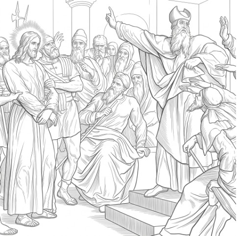
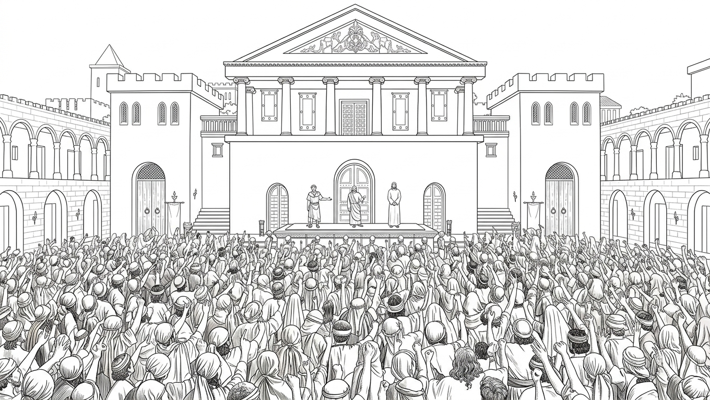

第 7 章，共 12 章
我的主人被釘十字架

夜裡的風很安靜。我和我的同伴站在樹梢上。
我們聽到耶穌和祂的門徒走入樹林。耶穌走在前面，然後他跪在石頭上，祂淚流滿面地禱告：
「天父，你若願意，就把這杯撤去。然而，不要照著我的意思，只要成就你的意思。」
主人的手指緊緊抓住石頭，祂的身體俯伏，祂的汗水與淚水混在一起。主人禱告的聲音，在寂靜的樹林裡清楚可聞。樹林裡的鳥兒和我們都聽得很清楚。可是他的門徒都在遠處睡著了。
我以前從未看過我的主人這個樣子。祂曾經站在風浪中，風和海都聽從祂。祂曾經只用一句話，就使病人得醫治。
可是那天晚上，祂卻顫抖的跪在地上。祂的臉上全是眼淚。我不明白。一個能夠命令風浪的主人，為什麼會在一塊石頭上顫抖？我覺得可怕的事情似乎即將發生。

遠處的黑暗裡，出現人類吵雜的聲音，和一大片火光。火把一支接著一支，沿著山路慢慢靠近。貓頭鷹和林間的鳥，看到他們的吼叫和火焰，就趕快飛走了。我看見金屬在火光中閃動。他們帶著武器。
我的主人的一個門徒叫猶大。是他帶著一群人，拿著火把來了。耶穌其他的門徒們知道他們是來逮捕耶穌和他們自己的，所以他們全都逃跑了。
猶大親吻了耶穌。我聽到耶穌問他：「猶大，你用親嘴的暗號出賣人子嗎？」
然後他們捆綁了耶穌。他們的火炬，在夜空中排成一排火流，逼耶穌到鎮中心去。然後那些群眾推著耶穌到一戶大院開始審判。
我其實是喜歡人類法庭審判的規則的。他們人類用審判庭解決紛爭。他們的審判庭，有理由，講秩序，不像我們鷹一樣，只會私下戰鬥到死。
在法庭上，他們輪流發言，即使是惡徒被告，也有機會申訴。審判期間，沒有人可以毆打嫌犯。
我曾試圖說服我的鷹同伴，在我們中間設立一個審判法庭。但是我們這些老鷹，都不知道下一步該做什麼。我想我們需要像人類一樣有讀書的學者。
但是，今天晚上不一樣，受審的人竟然是他們的老師耶穌。祂在一群有學問的人面前受審判，面容疲倦。一陣風吹來。我順勢盤旋，到大院上空去聽他們說什麼。
那一夜，他們一個接著一個說話。有些人在指控。有些人在大聲喊叫。有些人甚至還沒有等耶穌回答，就已經彼此點頭。我看不懂他們為什麼這麼急著判定一個人的罪。他們不是應該先聽完嗎？這些有學問的人，一邊審問祂，一邊譏笑祂。
耶穌的話很少。
祂被指控的罪名，是祂自稱是上帝的兒子，是基督。
祂什麼都不回答。只有當他們問祂，是否是上帝的兒子時才回答。
我的主啊，你怎麼不說話？
你像一隻待宰的羔羊，在屠宰場一樣沉默。我曾在屠宰場上，看到烏鴉貪婪地搶食地上的羊血。
你們這些審判祂的人，你們沒看到嗎？祂平時怎麼教導百姓？受百姓的愛戴嗎？你們中間有幾位，也受祂的教導。祂的話如同腳前的燈，在你的心中發光。你怎麼在白天接受祂，在晚上審判祂？如果祂說的是假的，這事就會過去。你也不需要處理祂。如果祂說的是真的，你為什麼拒絕祂？
經過一夜的指控，這些有學問的人，判處耶穌死刑。在宣判那刻，風停了。我差點摔倒在地。
我哭了。

我第一次知道，人類的戰鬥不一定需要用刀劍。他們也可以用謊言、權力和判決殺死一個人。沒有刀劍的戰爭，同樣撕裂了我的心肺。
他們沒有執行死刑的權柄，所以他們必須把耶穌交給羅馬總督和士兵來處決。這些有學問的人，彼此同意盡快將祂交給他們的總督。
清早，他們把耶穌捆綁起來，交給他們的總督彼拉多。
我在天上盤旋，忽然，我看到了出賣他老師的猶大。他一個人站在樹下，低著頭，痛苦懊悔。他去找那些控告耶穌的有學問的人。他要還他們一袋錢，但那些有學問的人不接受。
我不明白。他曾經跟隨我的主人，曾經和我的主人一起走過那麼多地方。為什麼道最後卻出賣祂？猶大把錢丟進聖殿，那些錢散落在地上。然後，他到郊外的樹下上吊了。
第二天，清晨的陽光才剛剛越過城牆，城裡已經開始喧鬧起來。我在天空盤旋，看見許多人朝著總督府前的廣場聚集。有人從城裡趕來，有人站在路旁張望，還有人一邊走，一邊大聲談論著昨夜發生的事情。人越來越多。

我從高處看下去，那片廣場已經填滿了人群。我們鷹若要看一場爭鬥，通常只需要幾隻鷹聚在一起。可是人類不一樣。他們喜歡聚集在一起，讓自己的聲音變得更大。我聽見有人喊叫，也聽見有人指著廣場中央。羅馬士兵站在四周，手裡拿著武器。
我看見我的主人。祂被士兵押了出來。我知道，他們一定鞭打過我的主。我的主的身上有血污以及痕跡。
在祂旁邊，還有另外一個被押出來的人。我以前聽過他的名字。巴拉巴。他是一個強盜，也是犯過罪的人。我看著他，又看向我的主人。群眾越來越激動。
我看到巴拉巴頭上有一大塊黑雲。那片雲，比我以前看過的任何烏雲都更加沉重。
我看到主耶穌，祂不說話。祂的尊容在廣場上發光。
我的主啊，你怎麼不說話？
總督告訴人群，他有權釋放一個。他問他們，是要釋放這強盜呢，還是釋放平時教導你們、受你們喜愛的耶穌？
群眾大聲喊出：「巴拉巴！」
那個惡人巴拉巴驕傲地走入人群離開了，他頭上的黑雲也跟著他。
彼拉多並問要如何處置耶穌。群眾大聲喊道：
「釘祂十字架！」
「釘祂十字架！」
他們的叫喊聲響遍全城，驚嚇了所有棲息的鳥兒。我們都飛走了。
我們老鷹，都曾經飛過城外那個釘十字架的山頭，看過羅馬兵丁怎麼執行釘十字架。士兵們在處決之前，總是剝掉所有衣物，包括內衣也不放過。釘在十字架裸露的屍體，讓烏鴉和禿鷹更容易撕咬肉塊。那裡常常有血的味道，也常常有烏鴉和禿鷹盤旋。可是，我從來沒有想過，有一天，我的主人也會被掛在那裡。我忽然明白了。原來那些掛在木頭上的人，曾經也有人愛他們。而今天，要被掛在那裡的是我的主人。
羅馬士兵強迫我的主背起十字架。那個十字架高出祂許多，祂已經扛不動了。
他們來到了山頂。兵丁戲弄我的主，用荊棘編了一個冠冕，戴在祂的頭上。
冠冕刺出了鮮血，血流滿祂的臉，模糊了祂的視線。兵丁攤開我主人的雙手，硬釘在木頭上，然後十字架就被舉起來了。
其他兩個歹徒，也同樣被釘在十字架上。其中一位的身體太重，結果手骨撕裂。劇烈的疼痛讓他一邊忍受著痛楚，一邊不停地咒罵上帝。
另一個被釘十字架的強盜斥責他：
「你不敬畏上帝嗎？我們得到了我們應得的。但耶穌沒有做過任何一件惡事。」
然後他用剩下的微弱的氣息，在十字架上喃喃而悲傷地對我的主人說：
「耶穌，當你的國降臨的時候，求你紀念我。」
我聽見我主回答他：
「我實在告訴你，今天你要和我一起在樂園了。」
我抬頭看向天空。我看見無數的天使大軍。他們面容沉重，凝視地上的這一幕。沒有我主人的命令，他們全都待命。這時候，只要我的主人一句話，他們就會立刻從天上降下來。
我的主啊，你怎麼不說話？
你本可以命令天使大軍以及我們這些勇士，把你從這些可惡的人類手中救出來。我的主啊，你怎麼不命令我們？
如果你命令我，我現在就可以飛下去。我可以用雙爪抓住那些士兵。我可以用翅膀把他們全部趕走。我們所有的鷹都可以一起飛下去。我們可以讓整個山頭都充滿翅膀。天使大軍可以輕易地將你從十字架上抬下，恢復到你榮耀威嚴的寶座。
我的主啊，你怎麼允許人類羞辱你？
我以及眾鷹，在天空盤旋大叫。烏鴉和禿鷹靠近你的十字架時，我們狠狠地叫牠們離開。我們不容牠們侵犯你。
到了下午，忽然黑暗降臨，整個大地都變得黑暗了。我聽到我主人說：
「我的神，我的神，你為什麼離棄我？」
我看著祂。祂沒有再說話。祂的頭低了下來。然後，祂斷氣了。我的主人死了。
忽然，地大震動，遠處高崖的巨石崩塌。鳥兒驚飛，鹿兒奔跑進樹林，地底下的所有鼠類躲藏。
士兵們害怕地驚呼說：
「那位耶穌，真是神的兒子！」
那位名叫森丘里的羅馬軍官，捶胸痛哭。他說：
「我殺了我的老師和上帝的兒子。」
「為什麼我沒有勇氣拒絕我指揮官的命令呢？」
「我應該為了一個好人去冒生命危險，可是我怎麼沒有？」
我曾見過森丘里。我的主在講道時，他是興奮認真的，他的心裡有火，他的頭上有光。可是現在，他的臉上滿是淚水。他站在十字架下面哭。
森丘里，你現在哭已經太晚了。我的主人已經死了。我與你一同哀哭。
貓頭鷹雙眉深鎖，群鷹嘴角緊閉。我們的主，頭上的荊棘冠冕，遮著了他痛苦的雙眉。
這是我們不了解的結。
這結走入歷史。
我們的心，不能平靜。